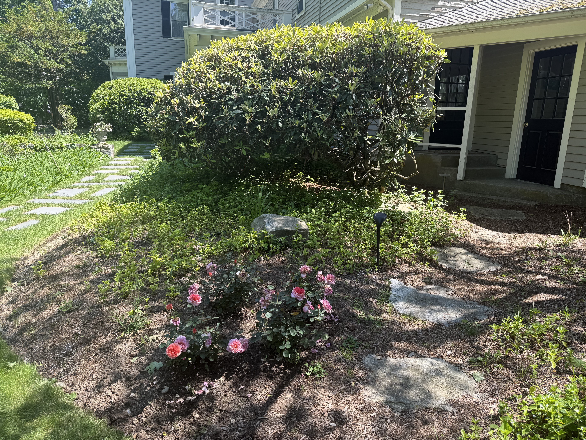

Quirk Landscaping · Books for the period beginning 05 · 16 · 2026
A landscaping business had a shoebox of Venmo screenshots and no books. I built it a complete double-entry accounting system in Excel, 23 accounts, a journal, a ledger, a trial balance, and statements that tie. No accounting software. Just the rules.
| Acct | Account | Debit | Credit |
|---|---|---|---|
| 1000 | Cash — Checking / Venmo | 825.00 | |
| 4010 | Revenue — Landscaping | 825.00 | |
| 5010 | Wages Expense | 360.00 | |
| 1000 | Cash — Checking / Venmo | 360.00 | |
| 6020 | Supplies Expense | 27.09 | |
| 1120 | Inventory — Leaf Bags | 27.09 | |
| Entry total | 1,212.09 | 1,212.09 |
One job, six lines. Revenue recognized, labor expensed against it, and leaf bags moved out of inventory into supplies expense — because the bags were bought in a prior entry and only consumed here. Debits equal credits, which is the only thing the system will accept.
How the book works
Nothing is retyped between stages. A number entered once on the job form appears in the ledger, the trial balance, and both statements without anyone touching it again — which is what keeps the statements honest.
Date, client, service, hours, revenue, wages, materials. Validated before anything is written.
14 entries, 43 lines. Every line carries its account number and type, pulled by lookup from the chart of accounts.
A pivot that posts the journal by date, entry, and account, so any balance can be traced back to the job that created it.
All 23 accounts, debits against credits. If the two columns disagree, the statements below are wrong and it shows here first.
Income statement and balance sheet, both reading directly off the trial balance. No hardcoded figures anywhere.
The output
| Acct | Account | Type | Debit | Credit | Balance |
|---|---|---|---|---|---|
| 1000 | Cash — Checking / Venmo | Current Assets | 13,225.00 | 1,165.44 | 12,059.56 |
| 1010 | Cash — Paper | Current Assets | — | — | — |
| 1100 | Accounts Receivable | Current Assets | — | — | — |
| 1110 | Inventory — Fuel | Current Assets | 19.98 | — | 19.98 |
| 1120 | Inventory — Leaf Bags | Current Assets | 63.37 | 27.09 | 36.28 |
| 1130 | Inventory — Other Supplies | Current Assets | — | — | — |
| 1500 | Equipment — Machinery | Fixed Assets | 700.00 | — | 700.00 |
| 1510 | Equipment — Hand Tools | Fixed Assets | 347.09 | — | 347.09 |
| 1600 | Accumulated Depreciation | Contra Assets | — | — | — |
| 2020 | Wages Payable | Current Liabilities | — | — | — |
| 3010 | Owner's Capital | Owner's Equity | — | 1,000.00 | (1,000.00) |
| 3030 | Retained Earnings | Owner's Equity | — | 10,000.00 | (10,000.00) |
| 4010 | Revenue — Landscaping | Service Revenue | — | 3,225.00 | (3,225.00) |
| 4020 | Revenue — Hauling / Moving | Service Revenue | — | — | — |
| 4510 | Other Revenue | Revenue | — | — | — |
| 5010 | Wages Expense | COGS | 1,035.00 | — | 1,035.00 |
| 5030 | Materials Expense | COGS | — | — | — |
| 5050 | Dump / Disposal Fees | COGS | — | — | — |
| 5060 | Equipment Rental | COGS | — | — | — |
| 6010 | Fuel Expense | Operating Expenses | — | — | — |
| 6020 | Supplies Expense | Operating Expenses | 27.09 | — | 27.09 |
| 6030 | Depreciation Expense | Operating Expenses | — | — | — |
| 6900 | Other Expense | Operating Expenses | — | — | — |
| Totals | 15,417.53 | 15,417.53 | 0.00 |
Empty accounts are left in deliberately. The chart of accounts was built for the business the operation is becoming — receivables, depreciation, disposal fees — not only for the transactions that happened in week one.
| Account | Amount | Total |
|---|---|---|
| Service Revenue | ||
| Revenue — Landscaping | 3,225.00 | |
| Revenue — Hauling / Moving | — | |
| Other Revenue | — | |
| Total Revenue | 3,225.00 | |
| Cost of Services | ||
| Wages Expense | 1,035.00 | |
| Materials Expense | — | |
| Dump / Disposal Fees | — | |
| Equipment Rental | — | |
| Total Cost of Services | 1,035.00 | |
| Gross Profit | 2,190.00 | |
| Operating Expenses | ||
| Fuel Expense | — | |
| Supplies Expense | 27.09 | |
| Depreciation Expense | — | |
| Other Expense | — | |
| Total Operating Expenses | 27.09 | |
| Net Income | 2,162.91 | |
Gross margin of 67.9% on the jobs booked so far. Wages are the only real cost of service, which is what you would expect from a labor business with owned equipment.
| Account | Amount | Total |
|---|---|---|
| Current Assets | ||
| Cash — Checking / Venmo | 12,059.56 | |
| Cash — Paper | — | |
| Accounts Receivable | — | |
| Inventory — Fuel | 19.98 | |
| Inventory — Leaf Bags | 36.28 | |
| Inventory — Other Supplies | — | |
| Total Current Assets | 12,115.82 | |
| Equipment | ||
| Equipment — Machinery | 700.00 | |
| Equipment — Hand Tools | 347.09 | |
| Less: Accumulated Depreciation | — | |
| Net Equipment | 1,047.09 | |
| Total Assets | 13,162.91 | |
| Liabilities | ||
| Wages Payable | — | |
| Total Liabilities | 0.00 | |
| Owner's Equity | ||
| Owner's Capital | 1,000.00 | |
| Retained Earnings | 10,000.00 | |
| Net Income | 2,162.91 | |
| Total Liabilities & Equity | 13,162.91 | |
Assets equal liabilities plus equity to the cent, and the tie is a formula, not a plug. Change any journal line and both sides move together.
What I learned Most
This project definitely challenged my knowledge of accounting, but I learned alot. When it came time to make decisions on how to organize the books I had to think about what I am representing with these numbers.
Crew labor is directly traceable to a job, so it belongs above the gross profit line. Putting it below would have made gross margin meaningless for a business whose only real input is hours. Supplies stay in operating expense because leaf bags aren't tied to a specific job at purchase.
Leaf bags and fuel are bought in bulk and consumed across several jobs. Buying them debits an inventory account; using them on a job moves the amount to supplies expense. Expensing at purchase would have been simpler and would have distorted every period the business bought ahead.
Client and service ride along on the journal lines, so the ledger can be expanded from an account balance down to the entry and the customer that produced it. That is the question an auditor asks first, and answering it shouldn't require a separate schedule.
Under the hood
Written in VBA. It validates the form, finds the next entry ID from the journal table itself, then writes debits and credits in matched pairs — so an unbalanced entry is not something the user can create by mistake.
' --- validate before anything is written --- If clientName = "" Or serviceName = "" Then MsgBox "Please choose a client and a service." Exit Sub End If If revenueAmt <= 0 Then MsgBox "Please enter a revenue amount greater than 0." Exit Sub End If If materialsAmt > 0 And materialsAcct = "" Then MsgBox "You entered a materials cost - choose which account it came from." Exit Sub End If ' --- next entry ID comes from the journal, not a counter --- nextID = Application.WorksheetFunction.Max(colEntryID.DataBodyRange) + 1 ' --- debits and credits are always written as a pair --- AddEntryLine loGE, nextID, entryDate, ..., "Cash -Checking / Venmo", revenueAmt, 0 AddEntryLine loGE, nextID, entryDate, ..., "Revenue - Landscaping", 0, revenueAmt If wagesAmt > 0 Then AddEntryLine loGE, nextID, entryDate, ..., "Wages Expense", wagesAmt, 0 AddEntryLine loGE, nextID, entryDate, ..., "Cash -Checking / Venmo", 0, wagesAmt End If If materialsAmt > 0 Then AddEntryLine loGE, nextID, entryDate, ..., "Supplies Expense", materialsAmt, 0 AddEntryLine loGE, nextID, entryDate, ..., materialsAcct, 0, materialsAmt End If ThisWorkbook.RefreshAll ' ledger, trial balance, statements
Each written line also rebuilds the account-number and account-type lookups against the chart of accounts, so a renamed or renumbered account propagates through the journal instead of silently breaking the trial balance.